Home Page Approvals Dashboard
- • Title of the request
- • Created and Modified dates
- • Modified By
- • Approval Status
- • Who the request is assigned to
- • Available actions (edit, open, delete—depending on permissions)
The Approvals 365 dashboard is the central workspace where users can view, filter, and interact with their approval items.
It contains two key sections:
Received
This tab displays all approval requests that require action from the currently logged-in user.
It shows the number of pending items with a count beside the tab name.
Users can view details such as:
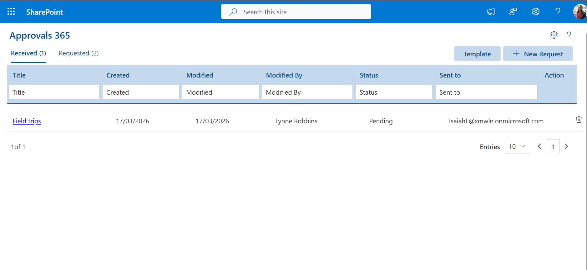
Requested
This section lists approval requests created or submitted by the user.
It acts as a personal tracking center, allowing users to monitor the progress of their initiated approvals.
Both tables support paging, filtering, and quick navigation, making it easy to manage large volumes of approvals.
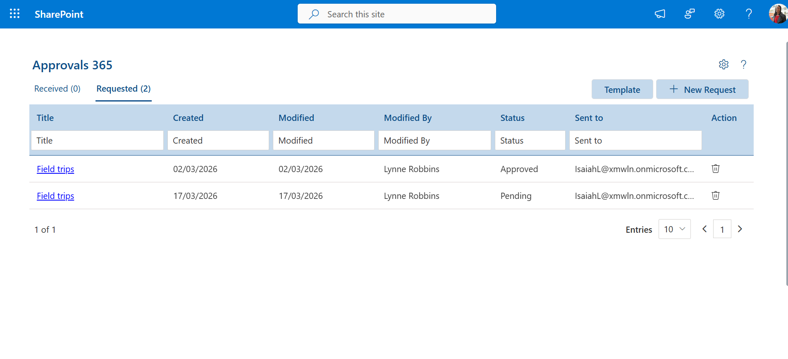
Creating a New Approval Request
Users can create a new approval request by selecting the New Request button on the dashboard.
The process includes:
- • Selecting a template (e.g., Activity Funds Application, Field Trips, and other admin-defined templates)
• Filling out the required fields on a dynamically generated form
• Saving and submitting the request
The form fields are based on the template design configured by administrators, ensuring that every request follows a standardized structure.
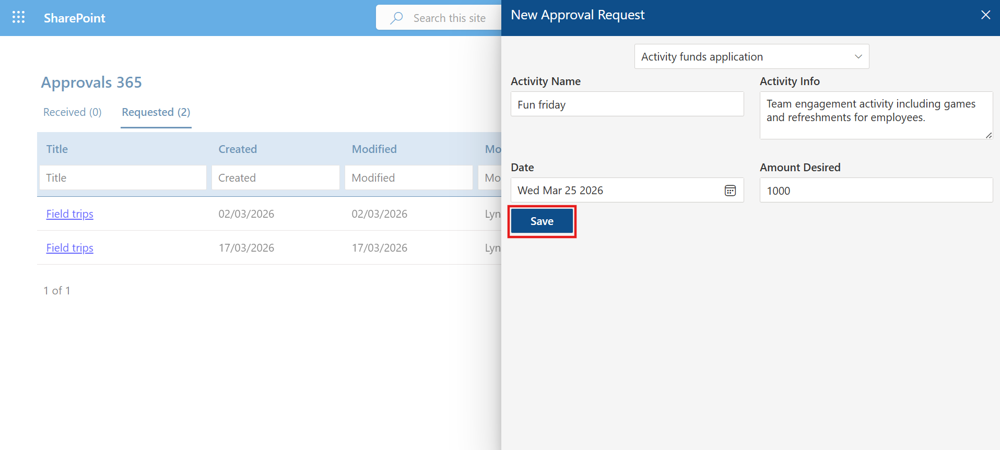
Creating a New Approval Request
When a user clicks on a request title—such as Activity Funds application —the full approval request opens in a detailed view.
This screen provides:
- • All submitted form data
- • Approvers involved in the workflow
- • Workflow stages and progress indicators
- • History of comments and actions
- • Status updates for each step of the process
This page acts as the central reference point for both requesters and approvers.
Approving a Request
Approvers reviewing a request will see action buttons such as:
Upon choosing either action, a Comment Popup appears.
The approver must:
• Enter a comment
• Click Submit
- Alternative Text — Provide descriptive text for accessibility.
- • Add new form templates
- • Edit existing templates
- • Delete templates no longer needed
- • A collection of ready-to-use templates
- • The ability to create a template from scratch
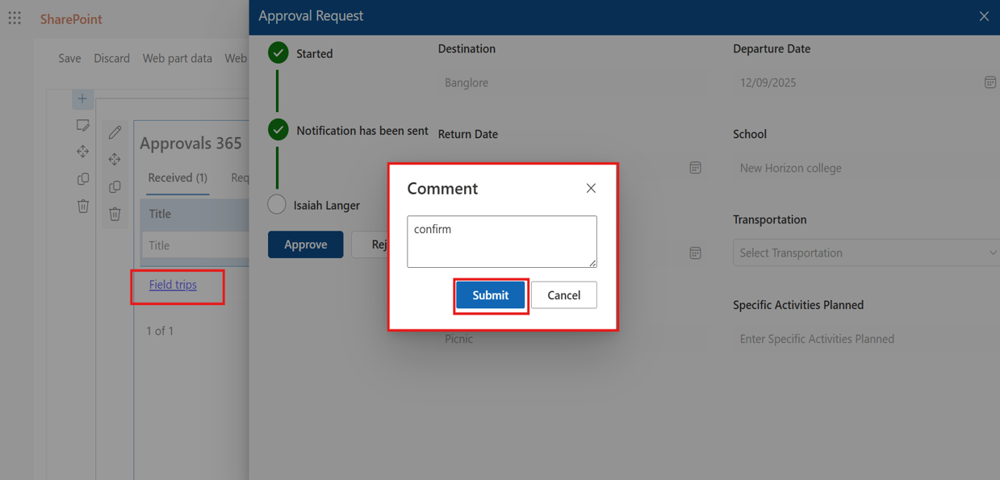
Once submitted, Approvals 365 processes the action, updates the workflow, and records the comment as part of the request history. This ensures accountability and transparent communication for all approval decisions.
Template Management
Administrators can create and manage templates through the Template panel available on the dashboard.
In this panel, admins can:
Templates define the structure of forms used across the organization, making this feature essential for administrators.
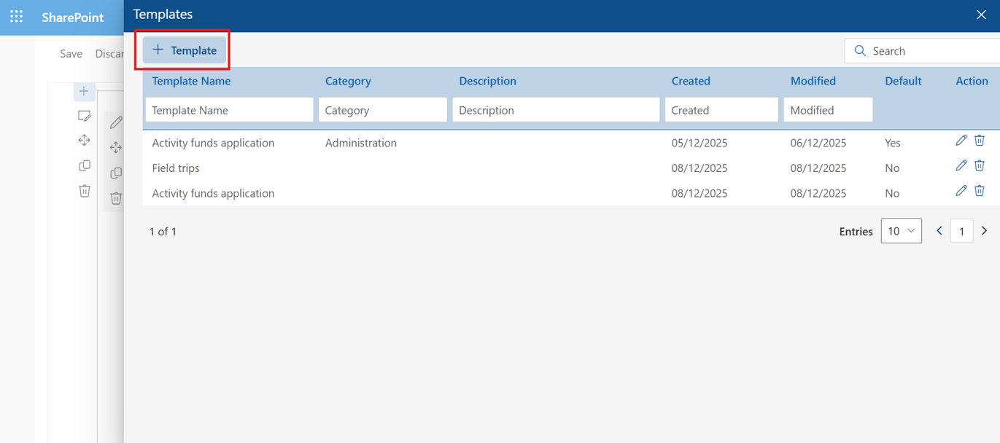
This area provides:
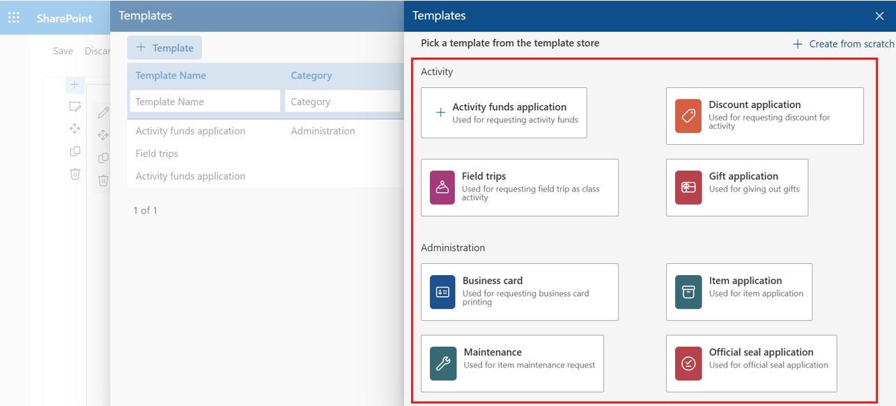
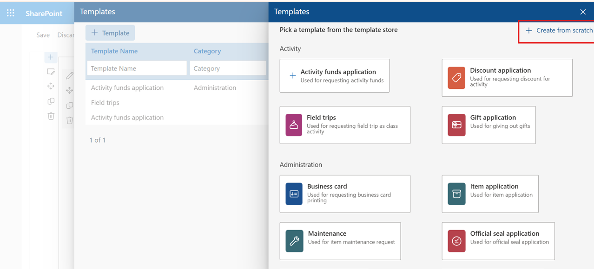
Template creation includes three guided steps:
Template creation includes three guided steps:
Basic Settings
Administrators can configure:
- • Template Name
- • Category
- • Description (used to help users understand the purpose of the template)
- • Whether the template is marked as Default
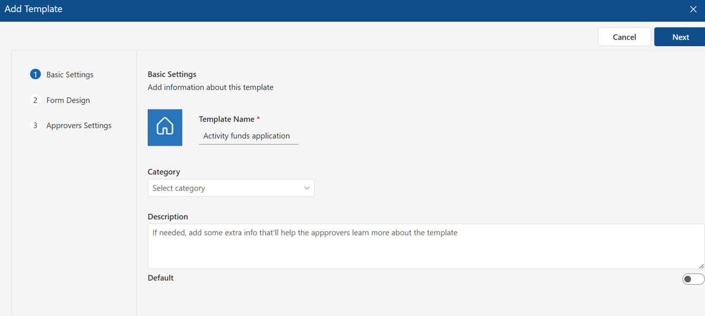
Form Design
Admins can design form layouts using a flexible drag-and-drop builder.
Features include:
- • Adding new sections
- • Arranging form fields
- • Marking fields as required
- • Reordering or removing form elements
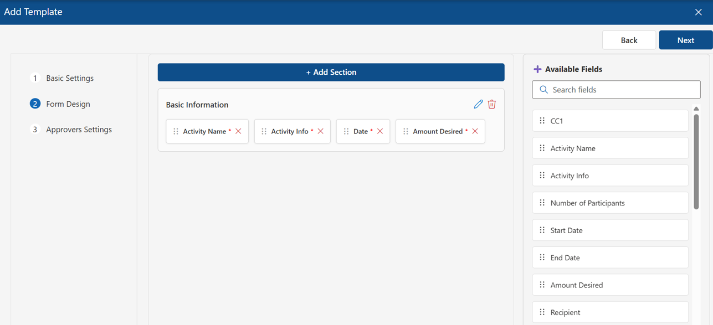
Approvers Settings
In this step, admins define the approval workflow.
They can configure:
- • Level-based approval flows
- • Multi-step sequential approvals
- • Assign approvers for each level
- • Automatically assign the requester’s manager
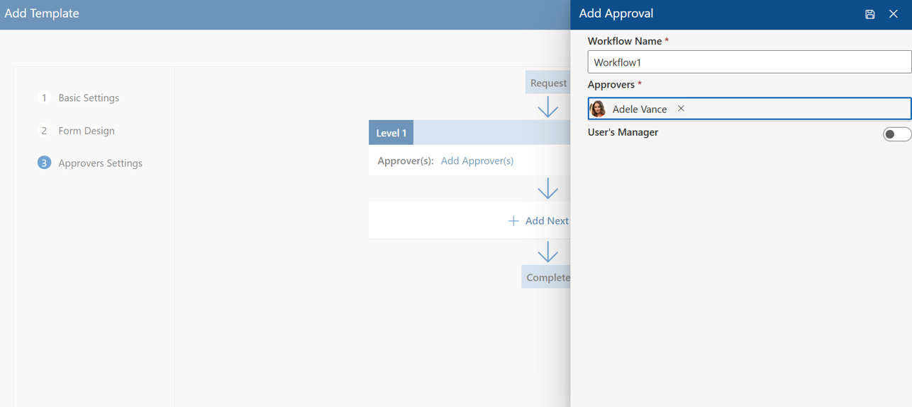
Editing and Deleting Requests
In the dashboard’s Action column, users may see:
- • ✏️ Edit icon
- • 🗑️ Delete icon
Users can edit their own requests as long as the approval process has not yet started.
Requests can be deleted as long as users have the required permissions.
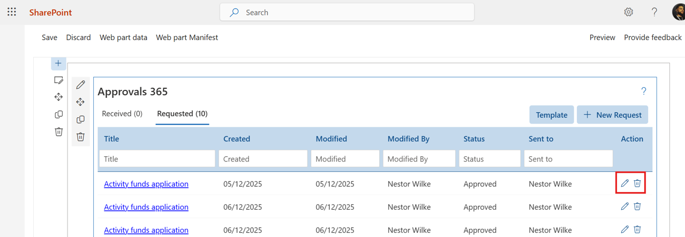